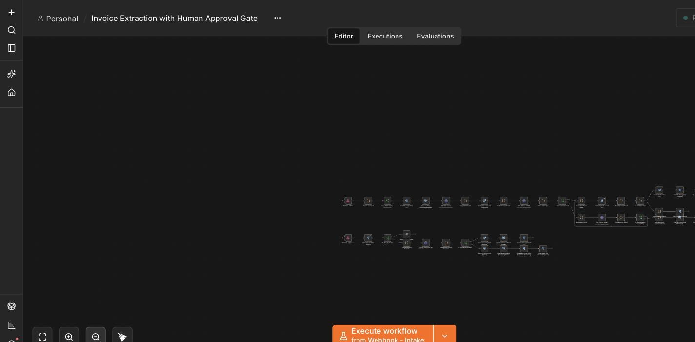
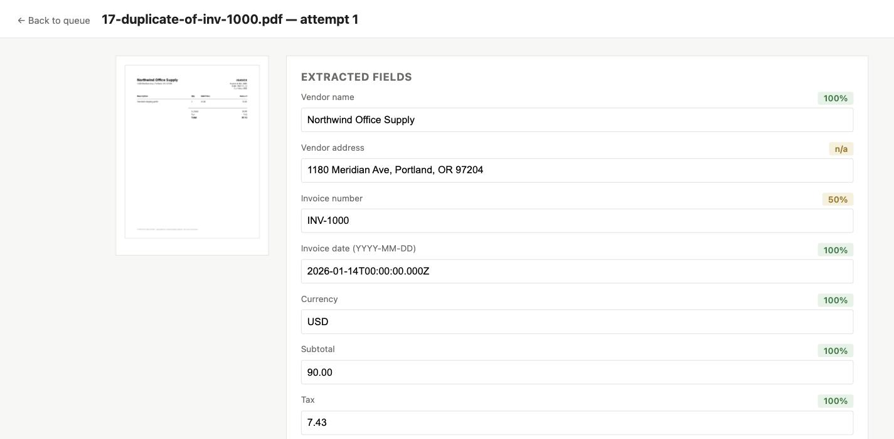
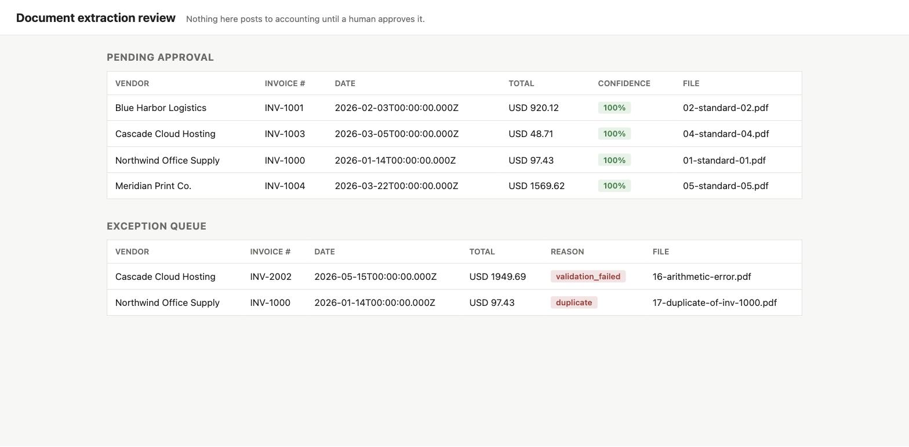
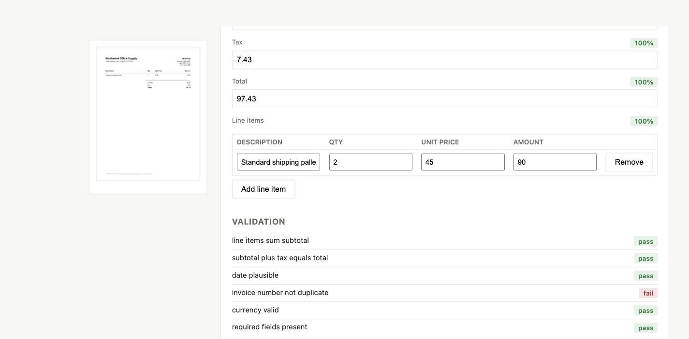

Invoice extraction, with a human approval gate
Ardent Partners puts the average cost to process one invoice by hand at $9.40. This pipeline drafts every field automatically, checks its own math, and refuses to post a single entry to accounting until a person signs off on it.
The problem: AI extraction is where compliance says no
What actually blocks this project.
Someone on the back-office team re-types every invoice by hand: vendor, invoice number, line items, tax, total. It's slow, and every manual entry is a chance to fat-finger a number.
The obvious fix runs into a wall the moment it reaches finance or compliance. An AI extraction tool means two separate problems stacked on top of each other: sending vendor and payment data to a third-party API, and letting a model write directly to the ledger with no one checking its work. Most teams that hear "AI" and "accounting system" in the same sentence say no before the demo finishes.
What I built: a pipeline that drafts, never posts
The system that replaced manual entry.
A self-hosted OCR and LLM pipeline reads each invoice, extracts the same fields a person would, checks its own math against six validation rules, and scores its confidence per field. Every result lands in a review queue, never in the accounting system directly. A person looks at the source page next to the extracted values, corrects anything wrong, and only then does an entry go through. Nothing else in the system can make that call, by design.
How it works: four stages before anything is posted
The pipeline every invoice moves through.
Every invoice moves through the same four stages. Only a human decision moves it past the fourth.
Text-layer PDFs are read directly. Scanned pages go through Tesseract, which returns a real confidence score instead of assuming perfect accuracy.
A local LLM, running on Ollama, nothing leaves the network, returns strict JSON: vendor, invoice number, line items, subtotal, tax, total.
Six rules check the math, the date, and duplicates. Each field gets a confidence score blending OCR quality, source grounding, and which rules it passed.
High-confidence, validated items queue for a one-click approval. Everything else waits in an exception queue until a person clears it.


How failures are handled: caught, scored, never guessed past
What happens when something is wrong.
The model is allowed to be wrong. It is never allowed to be wrong silently.
- Broken or hallucinated JSON
- If the model returns malformed JSON, or a field that doesn't match anything in the source text, the workflow retries once with a repair prompt, then routes to the exception queue instead of guessing.
- Math that doesn't add up
- Line items are checked against the subtotal, and subtotal plus tax against the total, to the cent. A mismatch routes straight to the exception queue.
- Duplicate invoices
- Same vendor, same invoice number, already on file: blocked automatically, regardless of how confident the model was about everything else.
- Technically valid, still uncertain
- A document that passes every rule but scores below the confidence threshold still goes to the exception queue instead of the fast lane.


The result
Why the gate is the whole pitch.
Ardent Partners puts the average cost to process an invoice by hand at $9.40; best-in-class AP teams, almost entirely through automation, do it for $2.78. The extraction part of that gap isn't hard, most tools can read a PDF. The part that actually stops teams from automating is trust: a system finance will turn on has to prove it can't post something wrong without a person seeing it first.
That's what this pipeline is built to prove. The extraction logic, the six validation rules, and the approval gate all sit in code you can read end to end, including the one place in the entire system where a write to accounting is even possible, and the fact that a human decision is the only thing that reaches it.
See the code and the walkthrough
The actual build, in the open.
The workflow, the validation rules, and the review UI are all in the public repository, runnable end to end with one Docker Compose command, along with a script that generates 20 synthetic test invoices covering the failure cases above.
Prefer email? hello@prudie.dev